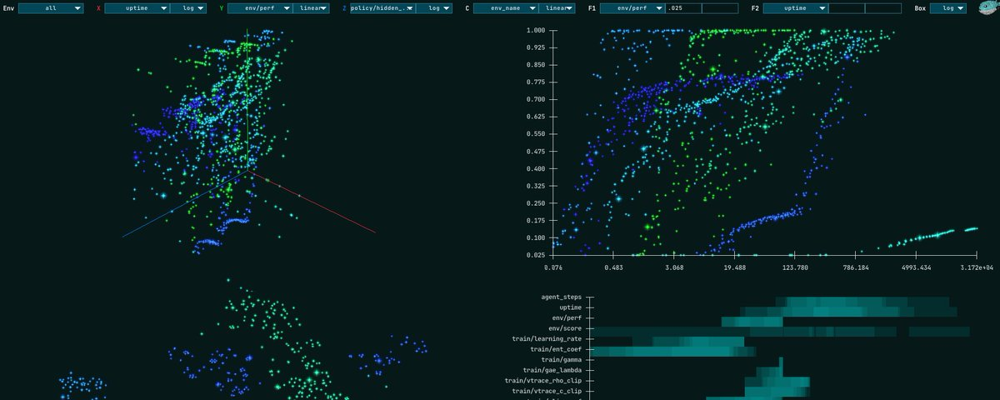

Visualizing 20k RL Experiments with Constellation

We ran 1000+ experiment hyperparameter sweeps for all of the environments in PufferLib 4. 12+ trillion total interactions, 17+ petabytes of observations processed. You can play with the data live in your browser at puffer.ai. Puffer 4 and Constellation are open source under the MIT license. Feed the🐡 a⭐️ on GitHub to support the project. If you're doing RL professionally, PufferAI also offers custom simulators and dedicated R&D services.
Constellation is a single ~1200 line C file built with raylib, raygui, a couple simple shaders, and cJSON for loading data. It's a simple static-memory architecture that can render 100k points at 60 fps. No lag spikes when switching plot settings. The controls give you x, y, z, and color axes, linear/log/logit scales, and two filters that can be applied to any key. Settings are shared across figures. Right-clicking anywhere will bring up a tooltip for the nearest point as well as copy the hyperparameters to your clipboard for easy replication.
The first two plots are simple 3D and 2D point clouds. Our baselines downsample each experiment to between 1 and 50 points, depending on its duration. Scatters are cleaner than line plots when viewing hundreds or thousands of experiments. We usually use 2D + color for single-environment analysis and 3D when comparing across all environments.
The third plot is a TSNE over hyperparameters. It can be useful to click around and find clusters of good settings for one or multiple environments. We got carried away with performance improvements this release and didn't have enough time to do as much analysis with this as we would have liked. The final plot shows the ranges of hyperparameters for the current data selection, modified by filters. You can use this, for example, to find stable ranges for runs above a specific performance threshold or under a sample budget.
When running benchmarks for PufferLib 4.0, we had multiple multi-gpu machines sweeping different environments. The simplest workflow for constellation is to zip the log directory on remote machines, scp them to your local, and run the data postprocessing script in the constellation directory.
Constellation was heavily inspired by OpenRL Benchmark, a database of WandB runs across many environments and algorithms. We wanted to share PufferLib 4's baselines on our website and make it easy for people to play with the data. After OpenAI bought and killed Neptune, we decided it was time to move away from 3rd party services for core functionality. WandB is still supported for now.